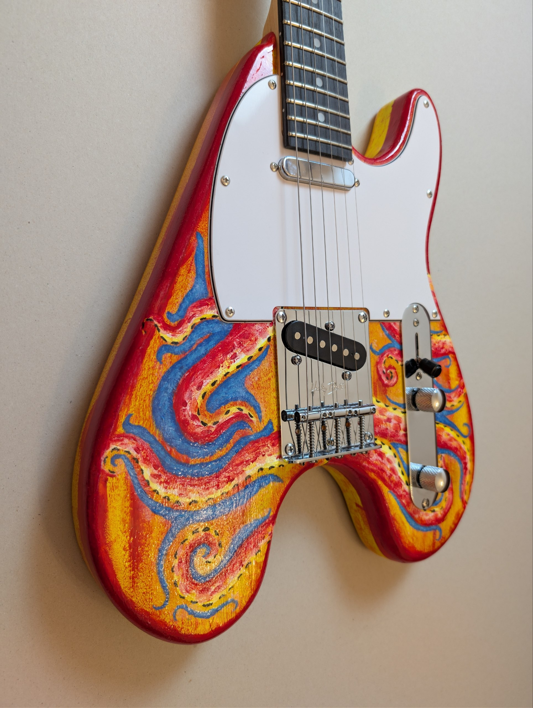
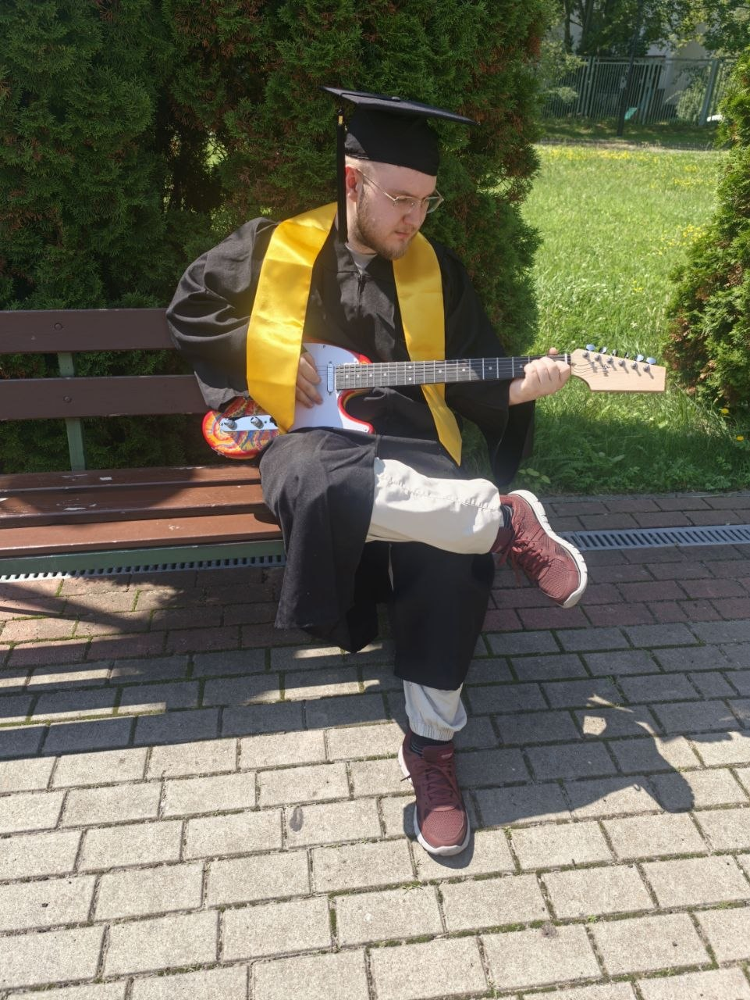

Nikita Nareyko
Graphic Designer & Brand Identity Specialist
Graphic designer with a Bachelor's degree in Graphic Design (2026, taught in English) and a Bachelor's degree in Business (Marketing). I build brand identities and visual systems, from modular logos and print/digital guidelines to logo animation.
With hands-on experience in visual design and marketing for B2B technology companies, I combine strategic business thinking with craft. I use AI tools to rapidly explore visual directions and finalize production-ready assets in Adobe Creative Suite and Blender.
Graduation Project: From 3D Concept to Physical Guitar
Vistula University • BA in Graphic Design (2026). Exploring emotional form language in Blender and bringing the final design into reality.


Experience
Marketing Specialist & Visual Designer
Visual identity development for the FairHelm brand; LLM quality audit and AI readiness for B2B product teams.
Marketing Specialist
Visual content, campaign materials, and technical articles for B2B engineering simulation software.